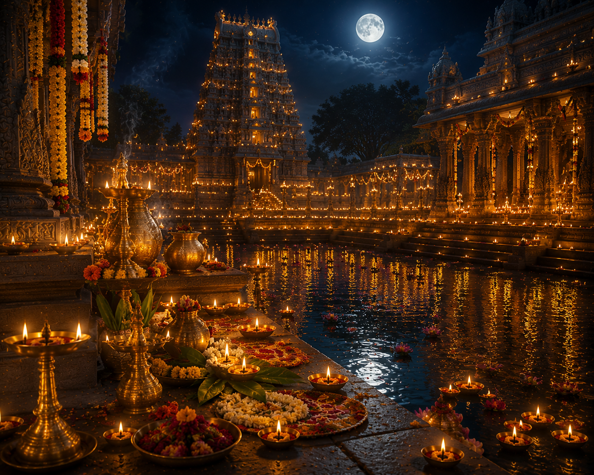

కార్తీక పౌర్ణమి హిందూ ధర్మంలో అత్యంత పవిత్రమైన పర్వదినాలలో ఒకటి. కార్తీక మాస పౌర్ణమి రోజున ఈ పండుగను భక్తిశ్రద్ధలతో జరుపుకుంటారు. శివుడు, శ్రీమహావిష్ణువు, తులసీదేవి మరియు పవిత్ర నదులను ఆరాధించడానికి ఈ రోజు అత్యంత శ్రేష్ఠమైనదిగా భావించబడుతుంది.
ఈ రోజున దీపారాధన, దేవాలయ దర్శనం, పుణ్యస్నానం, దానధర్మాలు చేయడం ద్వారా విశేష పుణ్యఫలం లభిస్తుందని పురాణాలు పేర్కొంటాయి.
---
కార్తీక పౌర్ణమి
భారతీయ మరియు తెలుగు సంప్రదాయ పర్వదినం

౧. పరిచయం
౨. పండుగ ప్రాముఖ్యత
కార్తీక మాసంలో చేసే ప్రతి పూజకు విశేషమైన ఫలితం లభిస్తుందని శాస్త్రాలు చెబుతున్నాయి. ముఖ్యంగా కార్తీక పౌర్ణమి రోజున వెలిగించే దీపాలు అజ్ఞానాన్ని తొలగించి జ్ఞానాన్ని ప్రసాదిస్తాయని విశ్వాసం.
ఈ రోజున శివారాధన, విష్ణుపూజ, తులసీపూజ, దీపదానం మరియు అన్నదానం చేయడం అత్యంత శుభప్రదంగా భావిస్తారు.
---
ఈ రోజున శివారాధన, విష్ణుపూజ, తులసీపూజ, దీపదానం మరియు అన్నదానం చేయడం అత్యంత శుభప్రదంగా భావిస్తారు.
---
౩. కార్తీక పౌర్ణమి మహిమ
పురాణాల ప్రకారం ఈ రోజున పరమశివుడు త్రిపురాసురులను సంహరించి **త్రిపురారి** అనే నామాన్ని పొందాడు. అందువల్ల ఈ రోజును **త్రిపుర పౌర్ణమి** అని కూడా పిలుస్తారు.
మరొక విశ్వాసం ప్రకారం, ఈ రోజున దేవతలందరూ గంగానదిలో స్నానం చేస్తారని పురాణాలు పేర్కొంటాయి. అందువల్ల కార్తీక పౌర్ణమి రోజున నదీస్నానం చేయడం అత్యంత పుణ్యప్రదంగా భావిస్తారు.
---
మరొక విశ్వాసం ప్రకారం, ఈ రోజున దేవతలందరూ గంగానదిలో స్నానం చేస్తారని పురాణాలు పేర్కొంటాయి. అందువల్ల కార్తీక పౌర్ణమి రోజున నదీస్నానం చేయడం అత్యంత పుణ్యప్రదంగా భావిస్తారు.
---
౪. చరిత్ర
కార్తీక పౌర్ణమి ప్రస్తావన స్కాంద పురాణం, పద్మ పురాణం, శివ పురాణం, కార్తీక మహాత్మ్యంలో విస్తృతంగా కనిపిస్తుంది.
ప్రాచీన కాలం నుండి భారతదేశవ్యాప్తంగా శివాలయాలు, విష్ణు ఆలయాలు మరియు పవిత్ర నదీ తీరాలలో ఈ పర్వదినాన్ని ఘనంగా నిర్వహిస్తున్నారు.
---
ప్రాచీన కాలం నుండి భారతదేశవ్యాప్తంగా శివాలయాలు, విష్ణు ఆలయాలు మరియు పవిత్ర నదీ తీరాలలో ఈ పర్వదినాన్ని ఘనంగా నిర్వహిస్తున్నారు.
---
౫. కార్తీక పౌర్ణమి ఎలా జరుపుకుంటారు
ఉదయాన్నే పవిత్ర స్నానం చేసి శివుడు, శ్రీమహావిష్ణువు మరియు తులసీదేవిని పూజిస్తారు. సాయంత్రం దేవాలయాలలో, ఇళ్లలో మరియు నదీ తీరాలలో నూనె దీపాలను వెలిగిస్తారు.
దేవాలయ దర్శనం, రుద్రాభిషేకం, విష్ణు సహస్రనామ పారాయణం, శివపంచాక్షరీ జపం, దానధర్మాలు మరియు అన్నదానం నిర్వహించడం సంప్రదాయం.
---
దేవాలయ దర్శనం, రుద్రాభిషేకం, విష్ణు సహస్రనామ పారాయణం, శివపంచాక్షరీ జపం, దానధర్మాలు మరియు అన్నదానం నిర్వహించడం సంప్రదాయం.
---
౬. ప్రధాన ఆచారాలు
* కార్తీక స్నానం
* శివారాధన
* శ్రీమహావిష్ణు పూజ
* తులసీపూజ
* దీపారాధన
* రుద్రాభిషేకం
* విష్ణు సహస్రనామ పారాయణం
* దానం, అన్నదానం
* దేవాలయ దర్శనం
---
* శివారాధన
* శ్రీమహావిష్ణు పూజ
* తులసీపూజ
* దీపారాధన
* రుద్రాభిషేకం
* విష్ణు సహస్రనామ పారాయణం
* దానం, అన్నదానం
* దేవాలయ దర్శనం
---
౭. ప్రధానంగా ఎక్కడ జరుపుకుంటారు
* ఆంధ్రప్రదేశ్
* తెలంగాణ
* తమిళనాడు
* కర్ణాటక
* ఒడిశా
* ఉత్తరప్రదేశ్
* మహారాష్ట్ర
* భారతదేశమంతటా
---
* తెలంగాణ
* తమిళనాడు
* కర్ణాటక
* ఒడిశా
* ఉత్తరప్రదేశ్
* మహారాష్ట్ర
* భారతదేశమంతటా
---
౮. ఆధ్యాత్మిక సందేశం
కార్తీక పౌర్ణమి భక్తి, సేవ, దానం, వినయం మరియు ఆత్మశుద్ధితో జీవించాలని బోధిస్తుంది.
దీపాన్ని వెలిగించినట్లే మన హృదయంలో జ్ఞానం, దయ, ధర్మం మరియు భక్తి అనే వెలుగును వెలిగించుకోవాలని ఈ పర్వదినం సందేశం అందిస్తుంది.
---
దీపాన్ని వెలిగించినట్లే మన హృదయంలో జ్ఞానం, దయ, ధర్మం మరియు భక్తి అనే వెలుగును వెలిగించుకోవాలని ఈ పర్వదినం సందేశం అందిస్తుంది.
---
౯. ఆసక్తికర విషయాలు
* కార్తీక పౌర్ణమిని త్రిపుర పౌర్ణమి అని కూడా పిలుస్తారు.
* కార్తీక మాసంలో వెలిగించే దీపాలకు విశేష ప్రాధాన్యం ఉంది.
* ఈ రోజున శివాలయాలు, విష్ణు ఆలయాలలో లక్షలాది మంది భక్తులు దర్శనం చేసుకుంటారు.
* కార్తీక స్నానం అత్యంత పుణ్యప్రదమైనదిగా శాస్త్రాలు పేర్కొంటాయి.
* దీపదానం, అన్నదానం చేయడం మహాపుణ్యకార్యంగా భావిస్తారు.
* కార్తీక మాసంలో తులసీపూజకు ప్రత్యేక స్థానం ఉంది.
---
* కార్తీక మాసంలో వెలిగించే దీపాలకు విశేష ప్రాధాన్యం ఉంది.
* ఈ రోజున శివాలయాలు, విష్ణు ఆలయాలలో లక్షలాది మంది భక్తులు దర్శనం చేసుకుంటారు.
* కార్తీక స్నానం అత్యంత పుణ్యప్రదమైనదిగా శాస్త్రాలు పేర్కొంటాయి.
* దీపదానం, అన్నదానం చేయడం మహాపుణ్యకార్యంగా భావిస్తారు.
* కార్తీక మాసంలో తులసీపూజకు ప్రత్యేక స్థానం ఉంది.
---
౧౦. కార్తీక పౌర్ణమి రోజున చేయవలసిన ముఖ్యమైనవి
* ఉదయం పవిత్ర స్నానం చేయాలి.
* శివుడు, శ్రీమహావిష్ణువును పూజించాలి.
* తులసీదేవికి పూజ చేయాలి.
* సాయంత్రం దీపాలు వెలిగించాలి.
* రుద్రాభిషేకం లేదా విష్ణు సహస్రనామ పారాయణం చేయాలి.
* దానం, అన్నదానం చేయాలి.
* దేవాలయ దర్శనం చేయాలి.
* భక్తితో శివనామం లేదా విష్ణునామం జపించాలి.
---
* శివుడు, శ్రీమహావిష్ణువును పూజించాలి.
* తులసీదేవికి పూజ చేయాలి.
* సాయంత్రం దీపాలు వెలిగించాలి.
* రుద్రాభిషేకం లేదా విష్ణు సహస్రనామ పారాయణం చేయాలి.
* దానం, అన్నదానం చేయాలి.
* దేవాలయ దర్శనం చేయాలి.
* భక్తితో శివనామం లేదా విష్ణునామం జపించాలి.
---
౧౧. ఆధారాలు
[object Object]
గ్రంథ ఆధారాలు
* స్కాంద పురాణం
* శివ పురాణం
* పద్మ పురాణం
* కార్తీక మహాత్మ్యం
* శివ పురాణం
* పద్మ పురాణం
* కార్తీక మహాత్మ్యం
ఇతర ఆధారాలు
* భారతీయ ధార్మిక సంప్రదాయ గ్రంథాలు
* ప్రముఖ శైవ, వైష్ణవ దేవాలయాల ప్రచురణలు
---
* ప్రముఖ శైవ, వైష్ణవ దేవాలయాల ప్రచురణలు
---
౧౨. ముగింపు
కార్తీక పౌర్ణమి కేవలం ఒక పర్వదినం మాత్రమే కాదు. అది భక్తి, దానం, దీపారాధన, శివ-కేశవుల అనుగ్రహం మరియు ఆత్మశుద్ధికి ప్రతీకగా నిలిచిన మహోత్సవం.
ఈ పవిత్ర దినాన భక్తిశ్రద్ధలతో పూజలు చేసి, దానం, సేవ, ధర్మాచరణతో జీవించడం ద్వారా దైవానుగ్రహాన్ని పొందాలని శాస్త్రాలు ఉపదేశిస్తున్నాయి.
**"భక్తితో వెలిగించిన ఒక దీపం అజ్ఞానాంధకారాన్ని తొలగించి జ్ఞానజ్యోతిని ప్రసాదిస్తుంది — ఇదే కార్తీక పౌర్ణమి యొక్క శాశ్వత సందేశం."**
ఈ పవిత్ర దినాన భక్తిశ్రద్ధలతో పూజలు చేసి, దానం, సేవ, ధర్మాచరణతో జీవించడం ద్వారా దైవానుగ్రహాన్ని పొందాలని శాస్త్రాలు ఉపదేశిస్తున్నాయి.
**"భక్తితో వెలిగించిన ఒక దీపం అజ్ఞానాంధకారాన్ని తొలగించి జ్ఞానజ్యోతిని ప్రసాదిస్తుంది — ఇదే కార్తీక పౌర్ణమి యొక్క శాశ్వత సందేశం."**
✦ సర్వే జనాః సుఖినో భవంతు ✦